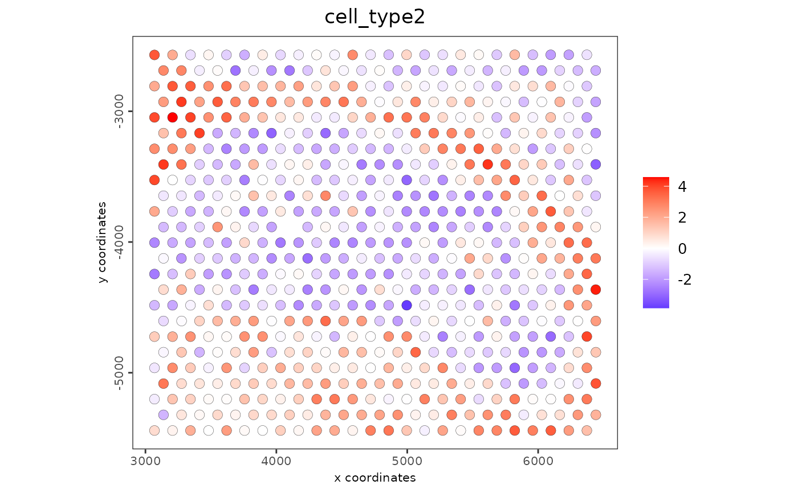

Expression feature-based enrichment scoring of labels.
A binary matrix of signature features (e.g. for cell types or processes) can
either be directly provided or converted from a list using
makeSignMatrixPAGE(). This matrix is then used with runPAGEEnrich() in
order to calculate feature signature enrichment scores per spatial position
using PAGE.
makeSignMatrixPAGE(sign_names, sign_list)
runPAGEEnrich(
gobject,
spat_unit = NULL,
feat_type = NULL,
sign_matrix,
expression_values = c("normalized", "scaled", "custom"),
min_overlap_genes = 5,
reverse_log_scale = TRUE,
logbase = 2,
output_enrichment = c("original", "zscore"),
p_value = FALSE,
include_depletion = FALSE,
n_times = 1000,
max_block = 2e+07,
name = NULL,
verbose = TRUE,
return_gobject = TRUE
)character vector with names (labels) for each provided
feat signature
list of feats in signature
Giotto object
spatial unit
feature type
binary matrix of signature feats for each cell type /
process. Alternatively a list of signature feats can be provided to
makeSignMatrixPAGE(), which will create the matrix for you.
expression values to use
minimum number of overlapping feats in
sign_matrix required to calculate enrichment
reverse expression values from log scale
log base to use if reverse_log_scale = TRUE
how to return enrichment output
logical. Default = FALSE. calculate p-values
calculate both enrichment and depletion
number of permutations to calculate for p_value
number of lines to process together (default = 20e6)
to give to spatial enrichment results, default = PAGE
be verbose
return giotto object
matrix (makeSignMatrixPAGE()) and
giotto (runPAGEEnrich(return_gobject = TRUE)) or
data.table (runPAGEEnrich(return_gobject = FALSE))
The enrichment Z score is calculated by using method (PAGE) from
Kim SY et al., BMC bioinformatics, 2005 as
\(Z = ((Sm – mu)*m^(1/2)) / delta\).
For each gene in each spot, mu is the fold change values versus the mean
expression and delta is the standard deviation. Sm is the mean fold change
value of a specific marker gene set and m is the size of a given marker
gene set.
g <- GiottoData::loadGiottoMini("visium")
#> 1. read Giotto object
#> 2. read Giotto feature information
#> 3. read Giotto spatial information
#> 3.1 read Giotto spatial shape information
#> 3.2 read Giotto spatial centroid information
#> 3.3 read Giotto spatial overlap information
#> 4. read Giotto image information
#> python already initialized in this session
#> active environment : '/usr/bin/python3'
#> python version : 3.10
#> checking default envname 'giotto_env'
#> a system default python environment was found
#> Using python path:
#> "/usr/bin/python3"
sign_list <- list(
cell_type1 = c(
"Bcl11b", "Lmo1", "F3", "Cnih3", "Ppp1r3c",
"Rims2", "Gfap", "Gjc3", "Chrna4", "Prkcd"
),
cell_type2 = c(
"Prr18", "Grb14", "Tprn", "Clic1", "Olig2", "Hrh3",
"Tmbim1", "Carhsp1", "Tmem88b", "Ugt8a"
),
cell_type2 = c(
"Arpp19", "Lamp5", "Galnt6", "Hlf", "Hs3st2",
"Tbr1", "Myl4", "Cygb", "Ttc9b", "Ipcef1"
)
)
sm <- makeSignMatrixPAGE(
sign_names = c("cell_type1", "cell_type2", "cell_type3"),
sign_list = sign_list
)
g <- runPAGEEnrich(
gobject = g,
sign_matrix = sm,
min_overlap_genes = 2
)
#> Setting spatial enrichment [cell][rna] PAGE
spatPlot2D(g,
cell_color = "cell_type2",
spat_enr_names = "PAGE",
color_as_factor = FALSE
)
